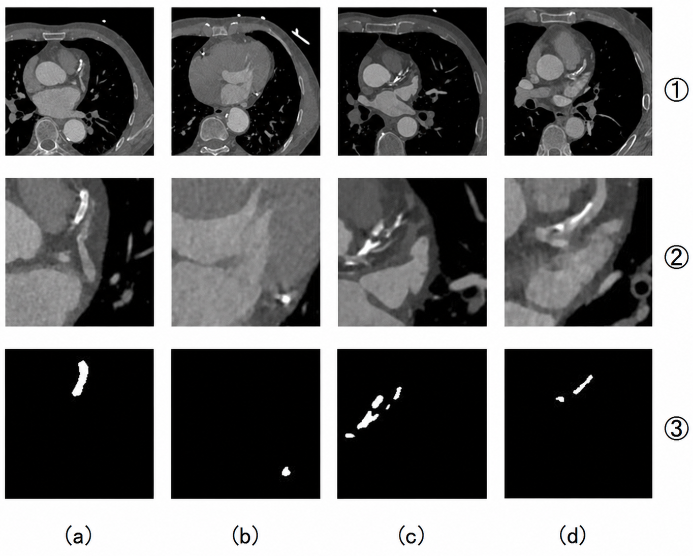
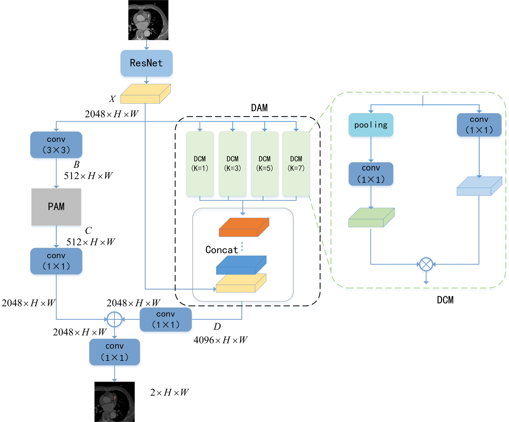

MDNet for Cardiovascular CTA Segmentation
Why It Matters
Calcified plaque segmentation is essential for evaluating coronary atherosclerosis and computing calcification scores. Manual annotation is time-consuming, and calcified regions can be small, irregular, and difficult to delineate accurately.
This project addresses automatic segmentation in cardiovascular CTA images using a method that combines spatial attention and dynamic multi-scale feature fusion.
Dataset
Dataset Overview
The dataset consists of 4046 cardiovascular CTA images collected from 127 patients with corresponding calcified plaque annotations.
- 127 patients
- 4046 cardiovascular CTA images
- XML-based plaque annotations
- Binary segmentation task
- 7:1:2 train/validation/test split
The dataset was manually annotated to identify calcified plaque regions within coronary CTA images. Corresponding XML annotations were converted into binary segmentation masks for model training and evaluation.
To reduce potential correlation between slices from the same patient, images were randomly shuffled prior to dataset splitting.

Method

Key Components
-
ResNet Backbone
Extracts hierarchical feature representations from cardiovascular CTA images. -
Spatial Attention Module (PAM)
Captures long-range spatial dependencies and enhances contextual information across image regions. -
Dynamic Multi-Scale Fusion (DAM)
Adaptively integrates semantic information from multiple receptive fields to improve segmentation of irregular calcified plaques.
Results
The model achieved strong segmentation performance on calcified plaque regions, with improved contour completeness and boundary fitting.
The method maintained manageable memory usage while improving accuracy over the baseline comparison method.
My Contribution
I contributed to method development, experiment analysis, figure preparation, and manuscript writing for this project.